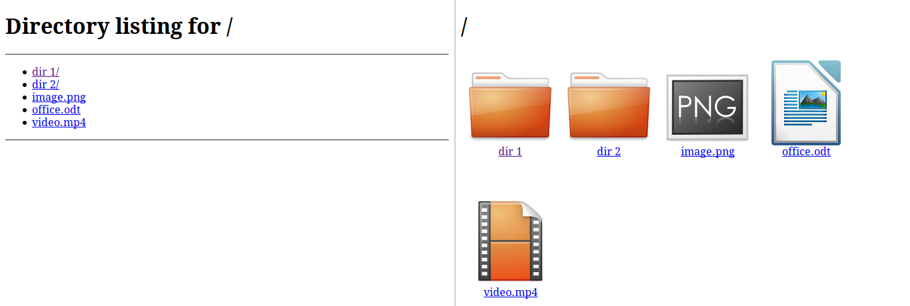

cofan Tutorial¶
This tutorial gives an introduction to how to use cofan python library and its features.
This is not a python tutorial. You are expected to have general knowledge in python before you start this tutorial.
About cofan¶
cofan is an http server library. It is similar to python standard http.server libarary but with the following features:
- Serve the content of a local directory as a file browser with icons for directories and files based on their extension.
- Serve the content of a local zip file the same way as the local directories.
- List the content of a local directory in json form.
- Serve local html files as a web site.
- Organize your urls in prefix trees.
- Response differently for different ip addresses
To put it short, look at the following screenshot comparison of http.server and cofan.

Comparison of http.server web page (left) and cofan (right)